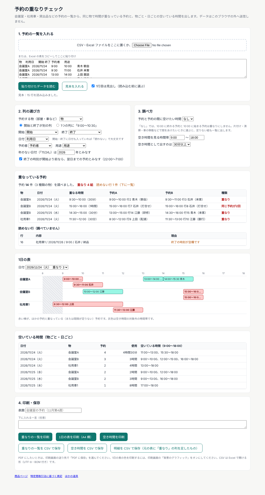

予約の重なりチェック
会議室・社用車・プロジェクターなどの予約を共有の表で受けているときに、同じ物で時間が重なっている予約（ダブルブッキング）を一覧にし、物ごと・日ごとの空いている時間も出すツールです。表を目で追って重なりを探したり、空いている時間を数えたりする手間がいりません。ソフトのインストールは不要で、いつものブラウザで動きます。
500円（税込・買い切り）
お試し版はすべての機能を使えて、調べる・印刷・保存は先頭30行までです。決済が終わると、そのまま製品版の画面に移動します。ブックマークしておけば何度でも使えます。

見本のデータ（会議室2つと社用車1台の予約15件）を調べた例。名前・用途は説明のための架空のものです。
こんなときに
- 会議室や社用車の予約を Excel や共有のスプレッドシートで受けていて、同じ時間に2人が入れていないか、まとめて確かめたい
- 予約フォームの回答や、予約システムから書き出した CSV を見て、重なっている予約に連絡したい
- 「明日、会議室Bはいつ空いている？」に答えるため、物ごとの空き時間を一覧にしたい
- 清掃・片付け・車の移動のために、予約と予約の間を15分あけるルールが守られているかを見たい
できること
- 重なりの一覧：同じ物で時間が重なる予約を組にして、重なる時間（例：9:30〜10:00、30分）と、両方の行の番号・予約者・用途を出します。まったく同じ予約が2回入っている行（二重登録）は「同じ予約が2回」と分けて表示します
- 間隔のチェック：「予約と予約の間に15分あける」のように選ぶと、重なってはいないが間が足りない組も「あと何分足りない」つきで出します
- 空き時間：「9:00〜18:00」のように見る時間帯を決めると、物ごと・日ごとに予約の数・使用時間・空いている時間帯（例：11:00〜13:00、15:30〜18:00）を一覧にします
- 1日の表：日付を選ぶと、物ごとに予約を横棒で並べた表を出し、重なっている予約を赤で示します。A4 横で印刷できます
- いろいろな書き方を読む：時刻は「9:00」「9時半」「午後1時」「0930」、日付は「2026/11/24」「11月24日(火)」「令和8年11月24日」。開始と終了が別の列でも、1つの列に「9:00〜10:30」「10時-12時」と書いてあっても読めます。開始に「2026/11/24 9:00」のように日付が入っていても大丈夫です。数日にわたる貸出（11/24 9:00〜11/26 17:00）も扱えます
- 読めない行の一覧：終了が空欄、日付が読めない、開始と終了が同じ、といった行は行の番号と理由つきで一覧にし、調べる対象から外します
- 保存：重なりの一覧・空き時間・明細（元の表に「重なり」「相手の行」の列を足したもの）を CSV で保存できます
- CSV（UTF-8・Shift_JIS）と Excel ファイル（.xlsx）を読めます。Excel の表をコピーして貼り付けても使えます
できないこと（購入前にご確認ください）
- 予約を受け付けたり、予約の表を書き換えたりはしません。今ある予約の一覧を読んで、重なりと空きを調べるところまでです
- 同時に何台・何人まで使える、という「数」のある物（例：同じ型の車3台を1つの名前で受けている）は扱えません。1台・1部屋ずつ名前を分けた一覧でお使いください
- 「会議室A」と「会議室Ａ」のような全角・半角の違いはそろえて同じ物として扱いますが、「第1会議室」と「会議室1」のような書き方の違いは別の物になります
- くり返しの予約（「毎週月曜 10時」）の展開はしません。1回ずつ1行になった一覧が必要です
- スマートフォンでは操作しにくいため、パソコンでお使いください
Excel だけで重なりを見つけるなら
A列が物、B列が日付、C列が開始、D列が終了（日付・時刻として入っている）なら、空いている列の2行目に
=COUNTIFS($A$2:$A$100,A2,$B$2:$B$100,B2,$C$2:$C$100,"<"&D2,$D$2:$D$100,">"&C2)-1
と入れて下までコピーすると、その予約と重なっている予約の数が出ます（0 なら重なりなし）。「同じ物・同じ日で、相手の開始がこちらの終了より前、かつ相手の終了がこちらの開始より後」の行を数え、自分自身の1件を引いています。10:00 終わりと 10:00 始まりは重なりに数えません。このツールが向いているのは、時刻が文字で「9時半」「午後1時」のように入っている、1つのセルに「9:00〜10:30」と書いてある、日をまたぐ予約があるなど式がそのまま使えないときと、どの予約とどの予約が重なっているかの組や、空いている時間帯まで知りたいときです。
よくある質問
| どの列が物・開始・終了か、自分で選ぶのですか？ | 「会議室」「社用車」「品名」「開始」「終了」「返却予定」「時間帯」「利用日」「予約者」などの見出しから自動で選びます。違っていたら画面で選び直せます。 |
|---|---|
| 10:00 に終わる予約と 10:00 に始まる予約は重なりになりますか？ | なりません。間をあけたいときは「予約と予約の間に空けたい時間」で 5〜60分を選ぶと、足りない組を「間隔不足」として出します。 |
| 夜をまたぐ予約（22:00〜7:00）は？ | 終了の時刻が開始より前なら、翌日までの予約とみなします（画面で切り替えられます）。 |
| データはどこかに送られますか？ | 送られません。読み込み・計算・印刷はすべてお使いのブラウザの中で行います。見る時間帯などの設定だけをブラウザに保存し、予約の中身は保存しません。 |
| 何行まで使えますか？ | 製品版は行数の制限はありません。数千行の一覧でも数秒以内に調べられます。画面の一覧は500行まで表示し、全部は CSV に入ります。 |
安心してお使いいただくために
- 予約の一覧はお使いのブラウザの中だけで処理し、サーバーには送信しません
- 動作環境：最新版の Chrome・Safari・Edge・Firefox（パソコン）
- 説明どおりに動かない場合は、ご購入から7日以内にご連絡いただければ返金します